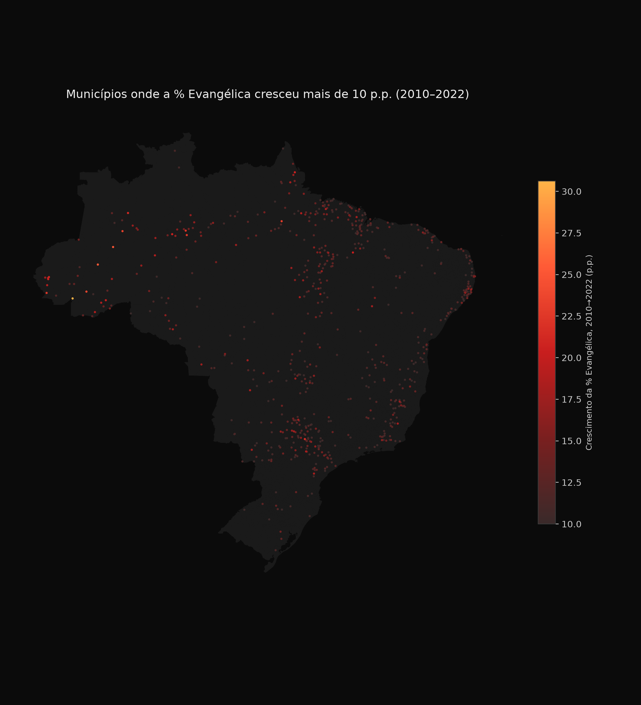

Relatório de investigação de dados
Distribuição por UF, série temporal de fundação, formalização institucional por vertente e dez perguntas em aberto — a partir de 765.591 templos geolocalizados.
% Católica e % Evangélica pentecostal por estado (rollup de vertente, as duas maiores categorias), ordenado por total de templos.
Participação de Católica e Pentecostal no total de templos, por UF
Ordenado por total de templos (desc.) · % sobre o total do estado
Fonte: dados/igrejas_geolocalizadas.parquet. Passe o mouse sobre uma barra para o valor exato.
| UF | Total | % Católica | % Pentecostal |
|---|
Padrão notável: RJ tem a menor % católica do país (4,9%) — bem abaixo até de SP (9,5%). Norte (PA, TO, AC, AP, RR, AM) tem consistentemente a maior % pentecostal (35–42%), enquanto Nordeste tradicional (PB, PI) mantém % católica mais alta (24%+), destoando do resto do país.

../mapa_conversao_evangelica_2010_2022.png) — a hipótese óbvia é que o Norte, sendo fronteira de povoamento mais recente, teve penetração pentecostal mais forte que o Nordeste católico tradicional, mas isso não foi testado formalmente aqui.CNEFE não tem data de fundação do templo. A única fonte de data é data_inicio_atividade do CNPJ (Receita Federal) — proxy limitado ao subconjunto formalizado (154.792 templos, 20,2% do total). Registros ativos de CNAE 9491-0/00 por ano de abertura, agregados por década.
Novos registros de CNPJ religioso (CNAE 9491-0/00), por década
Contagem absoluta · último período parcial (marcado *)
* 2020–2025 é parcial — só até a safra mais recente disponível (2025-09), não é uma década completa.
| Década | Novos registros | % do total formalizado |
|---|
Leitura: crescimento nítido e acelerado a partir dos anos 2000, com a década 2010–2019 sozinha respondendo por mais de um terço de todos os registros formais já feitos. Consistente com o boom evangélico bem documentado no Brasil nesse período — mas atenção: isto mede taxa de formalização/abertura de CNPJ, não taxa de fundação de igrejas. Uma igreja fundada em 1985 mas formalizada só em 2015 aparece como "2015" aqui.
Proporção de templos com CNPJ associado, por vertente (ordenado desc.). Católica em destaque — ver achado abaixo.
Taxa de formalização (CNPJ) por vertente
% de templos com CNPJ · Católica destacada em azul, demais em cinza de contexto
Fonte: dados/igrejas_geolocalizadas.parquet.
| Vertente | Total | Com CNPJ | % |
|---|
Achado contraintuitivo: Católica tem a menor taxa de formalização de todas, quase metade da média geral. Hipótese mais provável (não confirmada diretamente, mas coerente com a estrutura institucional conhecida da Igreja Católica no Brasil): a Diocese é o CNPJ, não cada capela/paróquia — uma diocese registra um único CNPJ que cobre dezenas de templos físicos, então o cruzamento por CEP (que exige um CNPJ religioso no mesmo CEP do templo) sistematicamente não encontra match para capelas distantes da sede administrativa. O número de 10,7% provavelmente subestima a formalização católica por um artefato metodológico, não reflete informalidade real maior que as outras vertentes.
Análise, não um achado extraído dos dados — baseada em conhecimento geral sobre o arcabouço legal brasileiro, não verificada linha a linha nesta sessão.
Isso é raciocínio, não uma citação de lei específica verificada — se for usar isso em algo formal, vale confirmar as referências legais exatas antes de publicar.
Coisas que a investigação levantou mas não deu tempo/dado pra responder de início. Oito delas foram respondidas na seção 6 cruzando arquivos que já existiam no projeto.
As oito perguntas abaixo (das dez da seção 5) foram respondidas cruzando arquivos que já existiam no projeto — nenhuma delas exigiu nova coleta de dado, só nova consulta. Duas ferramentas novas e reproduzíveis foram escritas para isso: dados/perguntas_abertas.py (responde §6.1–6.5 e §6.7, roda localmente) e dados/consulta_cnpj_vertente_tempo.py (responde §6.6 e §6.8, exige ssh beelink + DuckDB). Duas perguntas (6 e 10) permanecem sem resposta — ver nota ao fim desta seção.
Proporção pequena, não é um problema estrutural. Não investigamos linha a linha se são denominações que trocaram de nome no mesmo endereço ou duplicação genuína do CNEFE, mas a escala (0,7%) não muda nenhuma leitura agregada deste relatório.
Corresponde à Fig. 6/Apêndice B do NT20 — mas o NT20 só validou 2010, só evangélica, e só por UF. Aqui: por vertente, por município e por UF, contra o Censo 2022, correlacionando templos/100 mil hab. com % de fiéis declarados.
Correlação (r) entre templos per capita e % de fiéis declarados
Coeficiente de Pearson · por município (n=5.569) e por UF (n=26)
DF sai da base — zero templos no parquet, mesmo gap de fonte do CNEFE já registrado para docs/viz-uf (ver nt20-araujo-analise.md).
Leitura: a correlação é mais forte agregada por UF do que por município (esperado — ruído de classificação/geocodificação de cada templo individual se cancela na agregação). Evangélica é a vertente com correlação mais forte por UF (0,839), muito próxima do que o NT20 relatou para 2010. Católica tem a correlação mais fraca das quatro (0,411 por UF) — consistente com o achado da seção 3: capela católica raramente tem CNPJ no mesmo CEP, então a contagem de templos por município provavelmente subrepresenta presença católica de forma desigual.
RJ e AP são as únicas UFs abaixo de 99%. Não há um padrão evidente de "UF pobre/rural = coordenada pior" — RJ é justamente uma das UFs mais urbanizadas do país e ainda assim tem a pior taxa. A variação entre UFs (98,6%–100%) é pequena demais para distorcer qualquer análise de densidade deste relatório.
Cruzando terreiros/100 mil hab. por município com % preta+parda (Censo 2022), em 1.382 municípios com pelo menos um terreiro contado:
Correlação positiva, mas fraca — não confirma a hipótese "terreiro se concentra onde há mais população afrodescendente" com a força que se poderia esperar. Uma leitura possível: a formalização de Umbanda/Candomblé (§3, 21,4% com CNPJ) e a geocodificação por CNEFE têm suas próprias distorções regionais que competem com o sinal demográfico.
282.505 templos (36,9% do total) ficam sem vertente atribuída, com 100.683 descrições únicas entre eles. A distribuição é extremamente concentrada:
Composição dos templos "não classificados" (282.505)
Conclusão prática: depois de "IGREJA" isolado, o resto já é cauda longa (nenhum outro nome único passa de 2.305 ocorrências — "SEM NOME"). Não há uma nova leva grande de denominações nomeáveis esperando ser adicionada ao dicionário — o "não classificado" é estruturalmente irredutível na maior parte, não um dicionário incompleto.
Corresponde à Fig. 1/2 e Apêndice A do NT20. Reclassificando razao_social do CNPJ (não descricao_estabelecimento do CNEFE), CNAE 9491-0/00 ativos, por década. Cada painel tem escala própria — as vertentes diferem em ordem de grandeza, então uma escala compartilhada esconderia o formato de crescimento das menores.
Novos CNPJs religiosos por década, por vertente
Pequenos múltiplos · escala própria em cada painel (contagem absoluta)
69,0% dos 212.482 CNPJ religiosos ativos bateram no dicionário de vertente sobre razão social.
Leitura: a expansão evangélica pós-2000 (§2) é quase inteiramente puxada pela própria Evangélica — Católica e Espírita ficam praticamente estáveis em volume absoluto de novos CNPJs desde os anos 1980. O dado mais chamativo é Umbanda e Candomblé: cresce pouco até 2010, mas a década de 2020 (parcial) já supera 2010–2019 inteira em registros novos — sinal de formalização recente acelerada, não necessariamente de mais terreiros abrindo.
Corresponde à Fig. 3/4/5 do NT20 (feito só para Pentecostal por UF em 2019; aqui todas as vertentes juntas, por UF e por município, 2022).
Templos por 100 mil habitantes — extremos
UF (topo do ranking vs. lanterna) e município (pop. mín. 20 mil)
Topo do ranking por UF (1ª–11ª posição): AC, RO, PA, AM, AP, ES, RJ, BA, MA, RR, TO.
Por UF: AC lidera (781,6/100 mil hab.), SP é a lanterna (317,7/100 mil) apesar de ter o maior volume absoluto (124.424 templos, §1) — confirma que o ranking por volume bruto é puramente efeito de tamanho populacional, não densidade religiosa. Por município: topo dominado por Pará/Amazonas (Careiro-AM, Acará-PA); fundo dominado por Santa Catarina/litoral (Balneário Camboriú-SC, Blumenau-SC) — mesmo padrão regional, replicado em escala municipal.
Entre os 84.617 CNPJ religiosos ativos abertos até 2005 (20+ anos atrás), a proporção que continua ativa hoje varia muito por vertente:
Situação cadastral hoje, CNPJs abertos até 2005
% do total de cada vertente, por status
Base: 84.617 CNPJs religiosos ativos há 20+ anos.
Leitura: Católica tem, de longe, a maior taxa de sobrevivência institucional (quase 79%) — plausível dado que o CNPJ católico costuma ser da Diocese (§3), entidade administrativa estável, não a capela individual. Umbanda e Candomblé tem a menor taxa (20%) por uma margem grande — mas a base é pequena (1.764 registros) e a §3 já mostra que só 21,4% dos terreiros têm CNPJ para começo de conversa, então este número mede rotatividade entre os poucos terreiros já formalizados, não a estabilidade do universo real.
Pergunta 6 (por que tipo_especie=6 é mais comum que tipo_especie=8): é uma questão sobre o manual de campo do recenseador do IBGE. Não há como decidir isso cruzando dados que já temos — precisaria da documentação oficial do Censo 2022 ou contato direto com o IBGE.
Pergunta 10 (por que RJ tem a menor % católica do Brasil): é uma questão causal/histórica (colonização, migração, urbanização). Os dados agregados deste relatório descrevem o padrão mas não têm poder explicativo sobre a causa — precisaria de pesquisa histórica/bibliográfica, não de mais cruzamento de dataset.